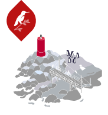
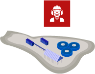

Tranque el Mauro
Yacimiento Minero
Puerto Punta Chungo

Isla Huevo
Salmuera
 Santuario de la naturaleza
Santuario de la naturaleza
Perturbación aérea
Arraigo y terrateniencia
Santuario de la naturaleza
Ecosistema Tranque

Área Chacay
Botadero las Hualtatas
Glaciares